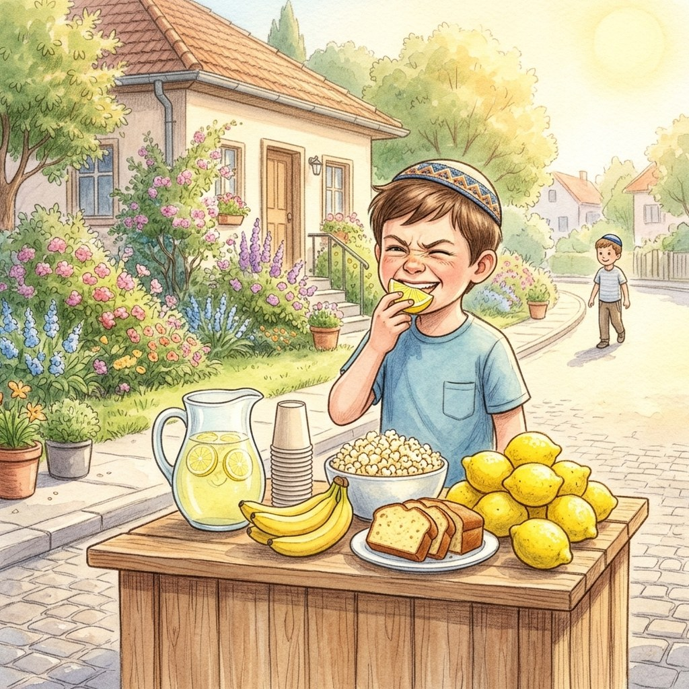

I've Got a Clue!
What Bracha Do We Make on a Lemon?
About this episode: Yedani opened a stand next to his house, and so far the only customer is Yedani himself. When the Rav walks by, Yedani asks: what bracha do we make on a lemon, and what changes when we sprinkle sugar on it? Also: the bracha on popcorn and on a banana, and what to do when we can't remember if we made a bracha.
0:00
--:--
We couldn't load the recording. Check your internet connection and try again.